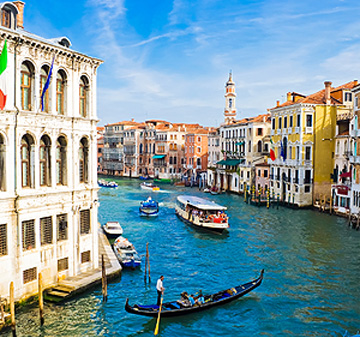
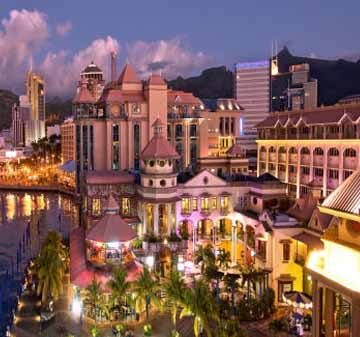
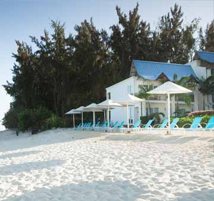

主要活动项目

鹿岛
拥有一天然优美的礁湖，水面宽阔平静，沙滩洁白细腻。岛上遍生椰子树和一种叫Filaos的植物，建筑物均为原始古朴的石房或茅屋。游客可享受各种海上运动：帆板、快艇、玻璃底船、水上滑翔伞、香蕉船等，还可品尝克里奥尔（土著）风味食物—海产品、蛇等。 更多
路易港
路易港是印度洋最繁忙的港口之一，常可看到不同国籍的商船和渔船在此停泊，呈现热闹而忙碌的海港风情。港口附近有专门为游人开辟的Caudan码头购物中心区，为游人提供各色美食的众多不同风味的餐馆，还有赌场和电影院供游人娱乐。 更多
西海岸
毛里求斯的西海岸便是海豚之家，是出海关海豚的圣地。出海不久便可看到海豚围绕船只嬉戏，如果运气好还能看到成群结对的海豚。在这里你们可以下水与海豚一起游泳，聆听海水之下独特的生命脉动，这也是可以和海豚近距离接触的唯一机会。 更多
毛里求斯共和国为非洲东部一岛国，位于印度洋西南方，距马达加斯加约800公里，与非洲大陆相距2,200公里。
毛里求斯属于亚热带海洋性气候，全年分雨旱两个季节
平均温度25℃。高原湖泊为岛民提供了淡水资源。 毛里求斯属亚热带海洋性气候。全年分夏、冬两季，每年的11月份到次年的4月为夏季，此时，海水的温度较高，约为27℃，沿海的气温27℃，中部高原稍低，为22℃。 更多
最佳的旅行时间为6至11月份.。
每年的5月份到10月份为冬季，沿海的平均气温要高一些，为24℃，中部高原稍低，为19℃，此时海水温度约22℃。全年气候温热。相对而言，这里每年的6至11月份气候较为凉爽，少雨，是最佳的旅行时间，而1至3月毛里求斯多雨，有时候还会有龙卷风，气候炎热潮湿。[1]
更多
岛上地貌千姿百态，沿海是狭窄平原，中部是高原山地，有多座山脉和孤立的山峰。
毛里求斯有100年才开一次的高大王棕随风摇曳，清池内飘荡着巨大的睡莲。毛里求斯茶隼和粉鸽是世界上的珍稀动物。 更多
毛里求斯主要资源都依赖进口。
毛里求斯矿产资源匮乏，石油、天然气等完全依赖进口，水力资源有限，近海海域渔业资源稀少，但230万平方公里专属经济区渔业资源丰富，盛产金枪鱼。
更多
同中国的关系
1972年4月15日建交。建交以来，两国友好合作关系发展顺利。
1988年，中方在毛里求斯建立了海外第一个中国文化中心。毛里求斯是唯一一个将春节定为法定假日的非洲国家。2003年，中国宣布毛里求斯为中国公民自费出境旅游目的地国。2011年7月，两国还开通了上海到毛里求斯的直航航线。 更多
对中国实行落地签政策。
建交以来，中毛经济技术合作与经贸往来持续发展。两国政府签有税收协定及其议定书、经济技术合作协定等，并于1985年成立经济、技术和贸易合作混合委员会。2011年，中毛贸易总额为6.31亿美元，同比增长24.6%，其中中方出口6.2亿美元，同比增长24.9%，进口0.11亿美元，同比增长10.6%。两国政府签有文化合作协定（1980年）。
更多